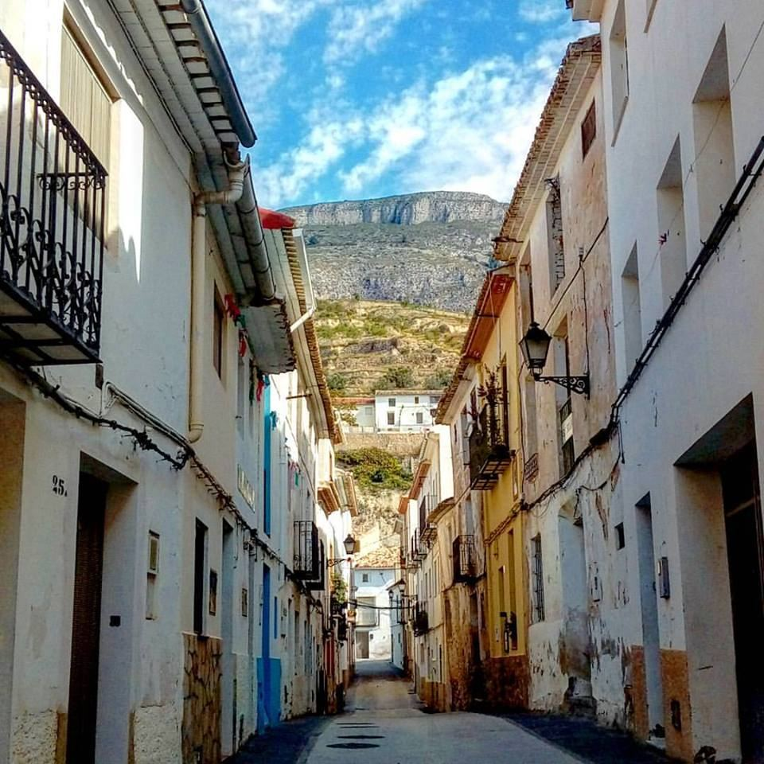
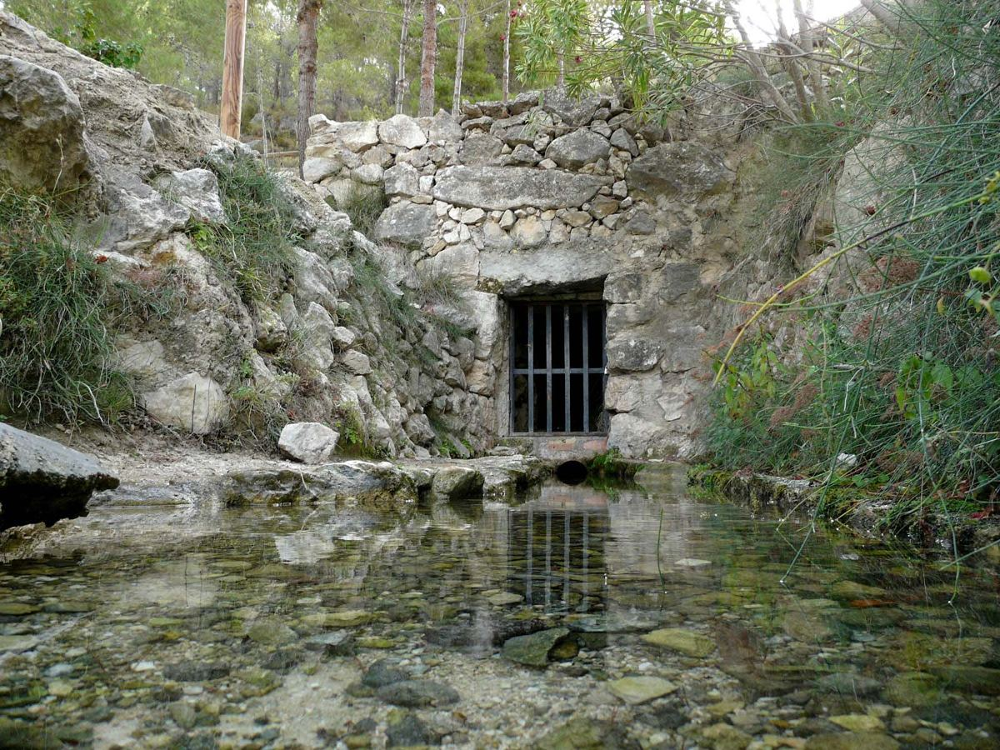

Portada » Serveis » Comerç local
Al poble hi ha forns, botigues, bars, allotjaments i professionals que treballen cada dia per als veïns i per a qui ens visita.
En aquesta guia trobaràs on són i com contactar-hi. Els números del mapa són els mateixos que els del plànol comercial imprés.

Carregant…
Cap comerç amb local coincideix amb la busca. Prova amb una altra paraula o tria «Totes».
Professionals i productors que treballen a domicili, per encàrrec o des de casa. Contacta-hi directament.

Cap activitat sense local coincideix amb la busca.
Falta el teu negoci o hi ha alguna dada incorrecta? Escriu a sella@sella.es o telefona a l'Ajuntament, 965 87 90 01.